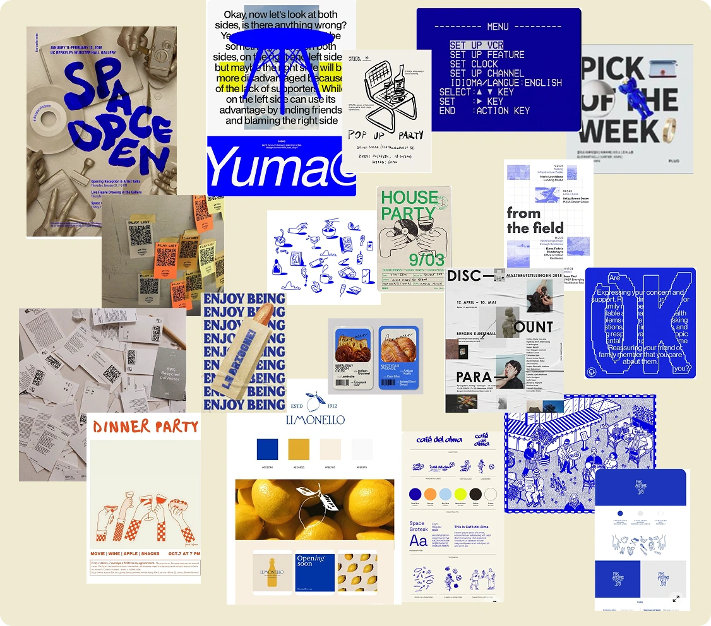
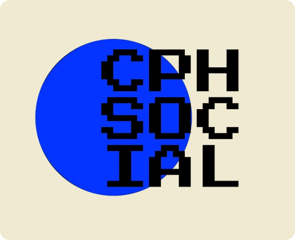
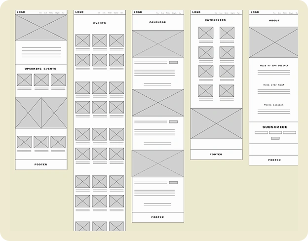
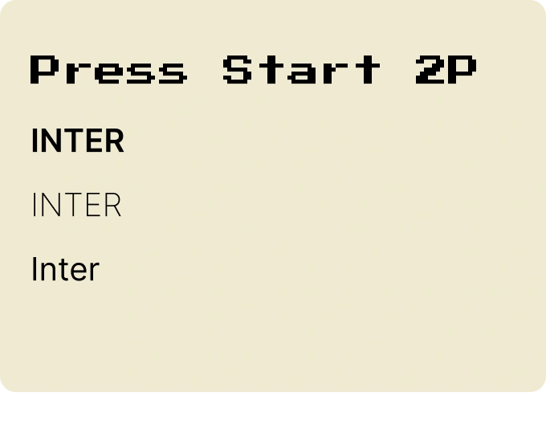

01 INTROUGE ↗
MULTIMEDIEDESIGNERS ROLLE OG FAGOMRÅDER – GITHUB OPSÆTNING (REPOSITORY OG VERSIONSSTYRING) – GRUPPEARBEJDE – GRUNDLÆGGENDE FORSTÅELSE FOR PROCES OG STUDIEARBEJDE
VIDEO PROJEKT
PÆSENTATIONSKORT
I præsentationskort-opgaven arbejdede vi individuelt med at tage et portrætfoto og designe et digitalt præsentationskort i Figma, som skulle deles med resten af holdet.
I Tema 1 arbejdede jeg med introduktion til multimediedesign
- Figma og FigJam
- Lille introduktion til Visual Studio Code
- Oprettelse af GitHub og publicering af mit første website via GitHub Pages samt samarbejde og proces.
Refleksion:
Tema 1 gav mig et grundlæggende kendskab til de værktøjer og arbejdsformer, der bruges på multimediedesignuddannelsen, og lagde fundamentet for de efterfølgende temaer.
02 GRUNDLÆGGENDE WEB ↗
HTML & CSS – MOBILE-FIRST & RESPONSIVE DESIGN – FLEXBOX & CSS GRID – DESIGNPRINCIPPER & TYPOGRAFI – BILLEDOPTIMERING OG FOTOGRAFI – FIGMA, GIT & GITHUB PAGES – STUDIESTARTSPRØVE
UGE 1
Fundament & opstart:
I uge 1 arbejdede jeg med grundlæggende HTML og CSS. Fokus var på korrekt struktur, semantik og workflow i VS Code. Jeg lavede øvelser som visitkort og 20-bokse-opgaven og publicerede mit første site via GitHub Pages.
Fokus:
HTML-struktur, CSS-basics, værktøjer og opstart på studiestartsprøven.
UGE 2
Layout & responsivitet:
I uge 2 arbejdede jeg med layout i CSS ved hjælp af Flexbox og Grid. Jeg byggede responsive layouts ud fra wireframes og layoutdiagrammer med mobile-first tilgang.
Fokus:
Layout, responsive design og visuel struktur.
UGE 3
- Design og visuel helhed
- Fokus på det samlede website
- Designprincipper og stil
- Typografi og læsbarhed
- Enkle CSS-effekter
- Fotografi og billedredigering
- Færdiggørelse og aflevering af studiestartsprøve
I uge 3 arbejdede vi med det visuelle og det samlede udtryk på et website. Fokus var på design, typografi, billeder og visuelle virkemidler, og på at samle det arbejde, vi havde lavet i Tema 2, til et færdigt website.
Studiestartsprøven gik ud på at færdiggøre et website efter et udleveret oplæg.
Websitet skulle:
- Bygges med HTML og CSS
- Følge et wireframe og layoutdiagram
- Fungere på både mobil og desktop
- Publiceres via GitHub Pages
Refleksion:
Studiestartsprøven gav mig erfaring med at samle mit arbejde i et færdigt website og styrkede min forståelse for samspillet mellem HTML, CSS, layout og design.
03 UX/UI ↗
UX/UI-DESIGN – RESEARCH & BRUGERFORSTÅELSE – IDÉUDVIKLING – WIREFRAMES & PROTOTYPER – VISUELT DESIGN – BRUGERTEST – RESPONSIVT WEBSITE – DOKUMENTATION & PRÆSENTATION
UGE 1
MOODBOARD
LOGO
WIREFRAME
FONTS
Layout & responsivitet:
I uge 1 arbejdede jeg med UX/UI-processen med fokus på research og idéudvikling. Jeg udvalgte et emne til mit website og arbejdede med brugerforståelse gennem research, inspiration og moodboards samt brugerens mål og user stories, som endte ud i et første koncept for løsningen.
Fokus:
Research og idéudvikling
UGE 2
Prototype & visuelle valg:
I uge 2 arbejdede jeg med at udarbejde wireframes og layoutdiagrammer i Figma, som jeg videreudviklede til en klikbar prototype for mit valgte website. Jeg arbejdede med visuelle valg, navigation, struktur og brugervenlighed samt grundlæggende designprincipper som typografi, kontrast og farver. Prototypen blev testet gennem brugertest og justeret ud fra feedback.
Fokus:
Fra wireframe til klikbar prototype i Figma.
UGE 3
- Kodning af website (HTML, CSS & JavaScript)
- Figma-prototype til kode
- Mobile-first & responsiv tilpasning
- Navigation og webkonventioner
- Git & GitHub
- Test og Lighthousetest
- Færdiggørelse af aflevering
- Fremlæggelse og feedback
I uge 3 arbejdede vi med det visuelle og det samlede udtryk på et website. Fokus var på design, typografi, billeder og visuelle virkemidler, og på at samle det arbejde, vi havde lavet i Tema 2, til et færdigt website.
Uge 3 gik ud på at lave min Figma-prototype til et færdigt, kodet website. Jeg udviklede websitet CPH Social, som er et eventsite med fokus på lokale arrangementer i København og med formålet at gøre events mere tilgængelige og overskuelige for brugeren. Websitet blev udviklet med udgangspunkt i min viden om HTML, CSS og JavaScript (Opsætning af burgermenu), med fokus på design, struktur, responsivitet og navigation.
Arbejdet omfattede:
- Kodning af website i HTML, CSS og JavaScript
- Implementering af design fra Figma-prototypen
- Responsivt layout og navigation
- Brug af Git og GitHub
- Publicering via GitHub Pages
- Test af websitet med Lighthouse
Arbejdet resulterede i færdiggørelse, lang process med rearch på events og aflevering af det endelige emnesite med tilhørende dokumentation ad arbejde. Jeg meste af min process gik egenligt på at lege med prototypen, og kodening som efterfølgende blev fremlagt med feedback fra både medstuderende og underviser.
04 BRUGERGRÆNSEFLADEUDVIKLING ↗
UI – VISUELT KONCEPT OG DESIGNPROCES – ADOBE ILLUSTRATOR OG SVG – FRONTEND-UDVIKLING MED HTML, CSS OG JAVASCRIPT – IMPLEMENTERING AF INTERAKTIONER OG VISUELLE EFFEKTER
PROTOTYPE
LOGO
I Tema 4 arbejdede jeg med udvikling af et Emergency Site med fokus på brugergrænsefladeudvikling. Opgaven omfattede idéudvikling, wireframes og visuel struktur samt arbejde med SVG og vektorgrafik i Adobe Illustrator.
Websitet tog udgangspunkt i en udleveret side, som var kodet og opsat med HTML og CSS, og som jeg byggede videre på med CSS og JavaScript-interaktioner som pop-ups, accordion og formularer, samt light/dark mode og grundlæggende tilgængelighed.
Jeg oplevede JavaScript som udfordrende og til tider uoverskueligt, og derfor kom fokus i højere grad på at få funktionaliteten til at virke og opgaven færdiggjort, fremfor at forfine det visuelle udtryk.
Tema 4 har givet mig en bedre forståelse for samspillet mellem design og kode, samt indsigt i mine styrker og udfordringer inden for brugergrænsefladeudvikling.
EMERGENCY SITE LINK05 GRUNDLÆGGENDE INDHOLD ↗
INDHOLDSPRODUKTION - DESIGNPROCES – FOTOGRAFERING - BILLEDREDIGERING – TEKST OG VISUEL KOMMUNIKATION – LOTTIEFILES – REDESIGN AF VIRKSOMHEDSSITE – BRUGEROPLEVELSE – GITHUB - LIGHTHOUSE
I Tema 5 arbejdede jeg med grundlæggende indholdsproduktion og visuel kommunikation, med fokus på storytelling, samarbejde og formidling på tværs af medier.
Jeg arbejdede kort med produktion af video, hvor vi i grupper af to planlagde, optog og redigerede en kort video med fokus på fortælling og stemning i Adobe Premiere Pro.
Den følgende uge arbejdede vi i gruppe med at udvikle et virksomhedssite for Café Esso, som ikke tidligere havde en hjemmeside. Her var fokus på indhold, visuel identitet og brugeroplevelse, samt research, målgruppeforståelse og test af løsningen.
Projektet gav erfaring med gruppearbejde, planlægning og samarbejde, samt versionsstyring med Git og GitHub.
Tema 5 har givet mig en bedre forståelse for, hvordan indhold, visuel kommunikation og samarbejde spiller sammen i udviklingen af digitale løsninger.